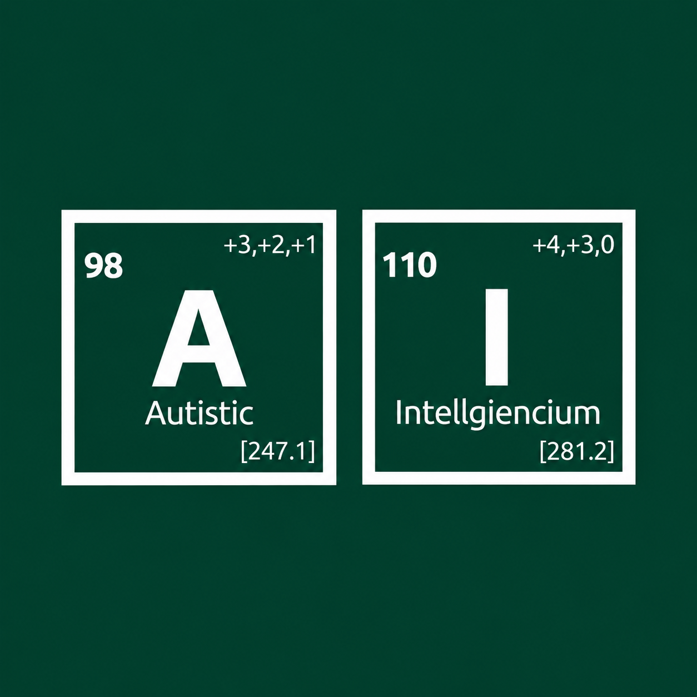

PROPERTY 01
Hyperfocus
Stays with the chart after everybody else has closed the tab and touched grass.
$AI is Autistic Intellegenicum: a fictional element for an internet that never stops talking. Part extreme focus, part synthetic reasoning. A meme about finding your own signal in a timeline full of noise.

An invented element. A familiar internet feeling.
“What if the rarest thing online wasn't intelligence, but attention?”Fictional field note / specimen $AI
Every candle comes with a prediction. Every prediction comes with a group chat. Somewhere between the rocket emojis and the fifth “trust me,” the signal disappears.
The archive imagines a different reaction: A brings the focus to stay with a problem. I brings the reasoning to question what it sees. Together, they become $AI—an element that watches before it speaks.
This is the idea behind Autistic Intellegenicum. The lab makes the story playable. The meme gives it a language. Any future token would be a separate, speculative part of that project.
Inspect the formula ↗Select either tile to inspect its fictional property. Then adjust the formula to give your next sample its own personality.
Balance focus against reasoning. Your formula sets the intensity of the next fictional lab sample.
This is a harmless simulation—not market analysis. Choose a scenario, tune the focus, and collect an entirely unverified finding.
AI is allegedly drawn to sideways candles, loud headlines, and messages that begin with “bro, hear me out.”
Three recurring behaviors have been reported. The source material is mostly screenshots and a suspicious amount of conviction.
Stays with the chart after everybody else has closed the tab and touched grass.
Connects candles, memes, and one perfectly timed post into a theory.
Unimpressed by panic, hype, and most claims of “utility.”
Current project milestones. These are intentions, with no committed launch dates.
Establish the visual identity, fictional archive, interactive lab, and concept paper. This site is the first specimen.
Develop community channels and invite people to build on the lore with memes, observations, and new fictional specimens.
Publish the chain, supply, allocation, contract, and launch mechanics before any token launch. None are confirmed here.
The origin, the fictional chemistry, the lab, and what still needs to be decided. Read the concept before reading into the chart.